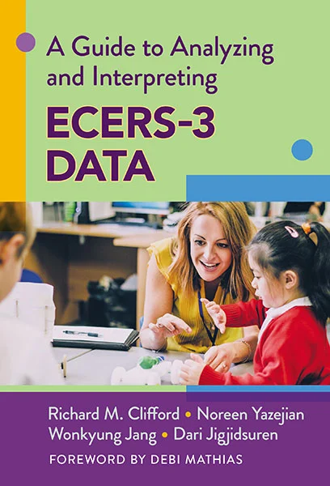

Overview / 02
High-quality learning environments are built from many layers: the overall classroom, the language and literacy children experience, each child's developing skills, and the moment-to-moment interactions that connect them. This work uses established, evidence-based assessment tools, including ECERS-3, CLASS, and QCIT for global quality, ELLCO for language and literacy environments, and LISn as an individualized, child-focused measure, together with individual child assessments and computational methods, to understand learning environments comprehensively from infancy and toddlerhood through early childhood.
Critical, human-centered lens
Classrooms communicate through space, materials, routines, books, and talk; each is part of how children are invited into literacy.
Quality scores reflect choices about what to observe and how to weight it; analyses attend to measurement properties and whether measures work similarly across programs, languages, and communities.
Quality data support professional learning and program improvement with teachers and leaders, not ranking or penalizing classrooms.
A comprehensive view
A full picture of children's language and literacy environments draws on several levels of evidence, from global classroom quality to individual children's skills to the moment-to-moment exchanges in which learning happens. The lab's work spans these levels, using established, evidence-based tools alongside newer computational methods so that each level informs the others.

Environment rating scales such as ECERS-3, observational measures such as CLASS, and, for infant and toddler settings, the Quality of Caregiver–Child Interactions for Infants and Toddlers (QCIT) describe the overall quality of space, materials, routines, interactions, and language and literacy opportunities. The ECERS-3 guide shows programs and researchers how to analyze and interpret these scores responsibly, and related studies examine how program, teacher, and classroom features relate to quality.
The Early Language and Literacy Classroom Observation (ELLCO) describes classroom supports for language and literacy, including books, writing, and the quality of language instruction. The Language Interaction Snapshot (LISn) is an individualized, child-focused tool that follows individual children to document the talk each child hears and uses, with teachers and with peers. Research on teachers' complex talk, content areas, and children's outcomes connects these features of the environment to language and literacy development.
Evidence-based, individually administered assessments of language and literacy show how environments relate to each child's vocabulary, comprehension, and emerging literacy skills. This work extends beyond the preschool years to infancy and toddlerhood, when the foundations of language and literacy are first laid.
Semantic networks and the DEEP Talk framework capture who introduces ideas, how adults respond, and how conversations around books and experiences are sustained. These fine-grained indicators complement the levels above rather than replace them.
How it works
Collect global quality ratings, language-focused observations, and individual child assessments in the same classrooms and programs.
Examine scores responsibly, with attention to measurement properties, subscales, and how features of programs, teachers, and classrooms relate to quality.
Link environment quality and language interaction to children's language and literacy development over time.
Share findings with programs, teachers, and families to inform professional learning, quality improvement, and responsive support.